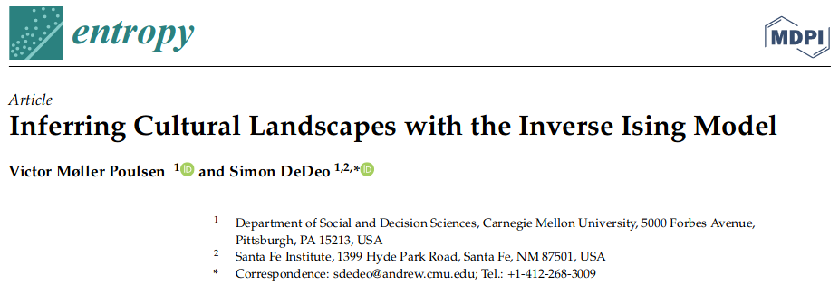

Mapping Religion
Inferring Cultural Constraints & Landscapes of the Possible
With Simon DeDeo at CMU

Why does culture look this way?

Cultural Landscapes Paper
 
Can we infer a full landscape from data?
… in high dimensions (\(N \geq 20\))?
… with small sample (\(N < 500\))?
… with partial data (NAN)?
… with uncertain data?
Religious Landscapes (DRH)

Logic of the landscape

\(\mathcal{Q}_1\): “Landscape” of Religion

\(\mathcal{Q}_1\): “Landscape” of Religion

\(\mathcal{Q}_1\): “Landscape” of Religion

\(\mathcal{Q}_1\): “Landscape” of Religion

\(\mathcal{Q}_1\): “Landscape” of Religion

\(\mathcal{Q}_1\): “Landscape” of Religion

\(\mathcal{Q}_2\): Dynamics & Equilibria

- isolated peak
- mountain range
- hillock
- valley
\(\mathcal{Q}_2\): Dynamics & Equilibria

- Religious theocracy / caliphate
- Contemporary (US-style) evangelical
- Elite monastic order
\(\mathcal{Q}_2\): Dynamics & Equilibria

\(\mathcal{Q}_3\): Predicting Missing Data
- Given the logic inferred from all religions we can predict attributes of a culture that are unknown to the field
- One example is the Archaic Spartan Cults (800BC-500BC)

Regularization

3. Partial-MPF (missing data)

Overview of religions